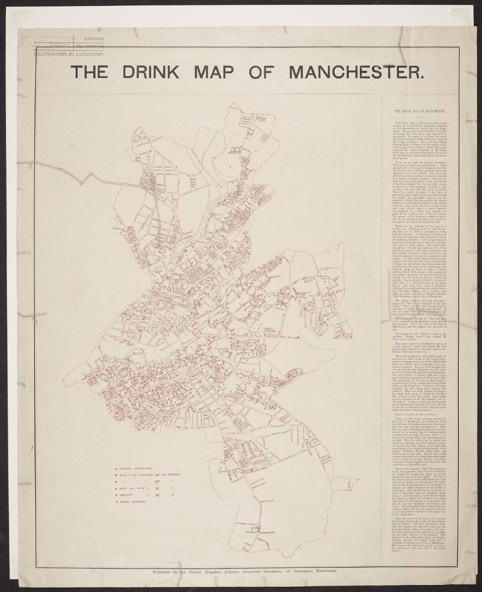
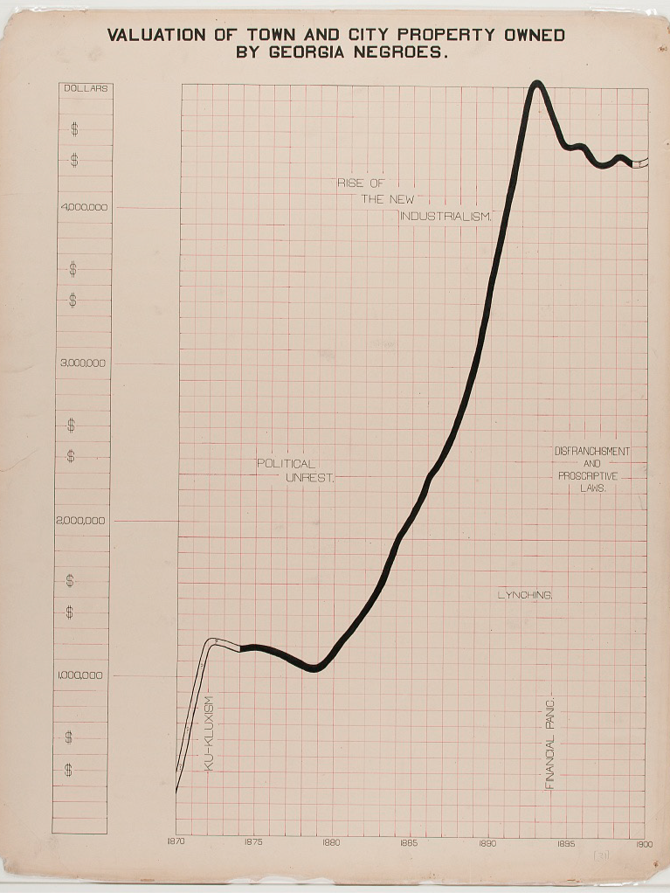

Figure 1: Drink map of Manchester (University of Manchester, Unknown)
The map was published by the United Kingdom Alliance, a prominent temperance organization, and appeared in the Manchester Guardian on January 5, 1889. It was based on data prepared for the City Magistrates.
The purpose was to offer a visual census of the exact extent of the licensed temptations to intemperance that exist in Manchester.By showing the city's magistrates, it is hoped to demonstrate the "density of temptation" and argue in favor of stricter control of liquor licenses.
The main message here is to give the people the power by means of a direct veto whether a place should be granted a license or no license to protect their community from liquor traffic.
The concept of the Drink Map is relevant to my project as an exercise in critical cartography, where invisible social forces are visualized as data. Just as the United Kingdom Alliance used the concept of the "density of temptation" to critique urban policy, I shall use the concept of the "density of temporal control" to critique digital design.
I shall use their convention of geometric symbolism, replacing alcohol markers with colonial artifacts, to classify the friction between Monochronic (M-time) & Polychronic (P-time). Following in the tradition of Du Bois, data portraits shall be used to illustrate how modern-day UI/UX design serves as a vessel for historical colonial hegemony.

Figure 2: Data Portrait of Property Valuation (Du Bois, W.E.B.2018)
Valuation of property in georgia over a span of 30 years (owned by negros)
I assume the image was produced using mixed treatment of hand-drawn and printed elements. The lines of the graph appear to be hand-drawn with varying thickness, while the text remind me of a typewriter font.
The spiral form allows decades of data to fit neatly into one image without feeling cluttered. Rather than a standard bar chart, the steep shaded line graph along with strategically placed labels provides depth and understanding of the data build up over time. It prioritises impact over precision, making the increase in property value immediately striking and emotionally readable at a glance.